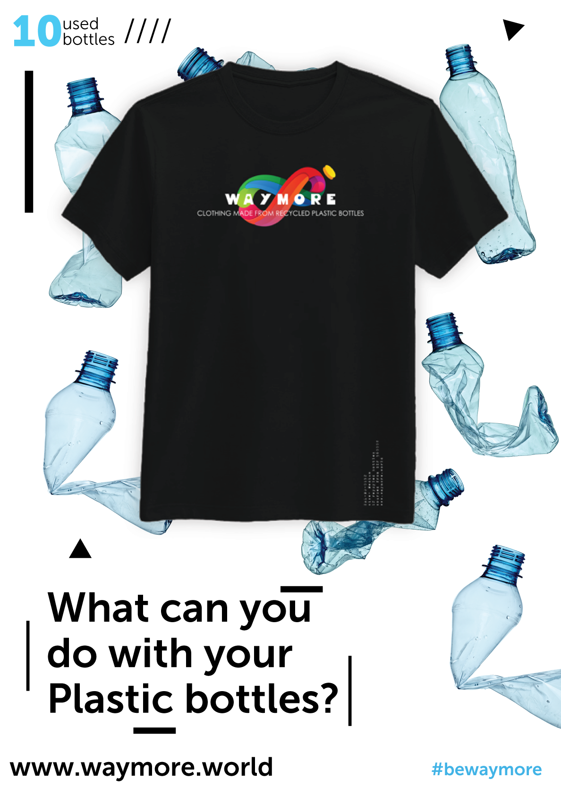
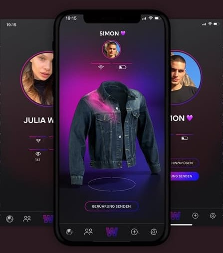
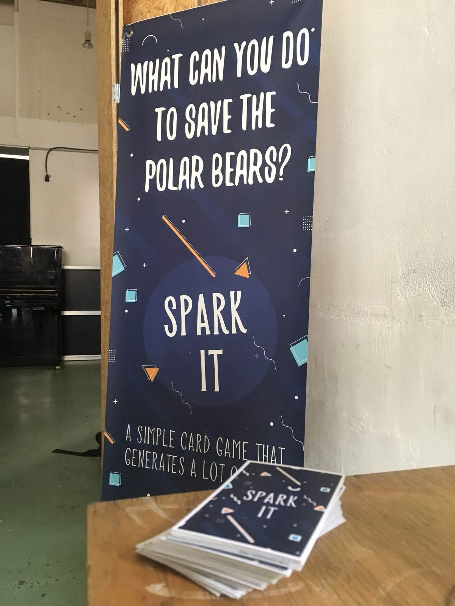
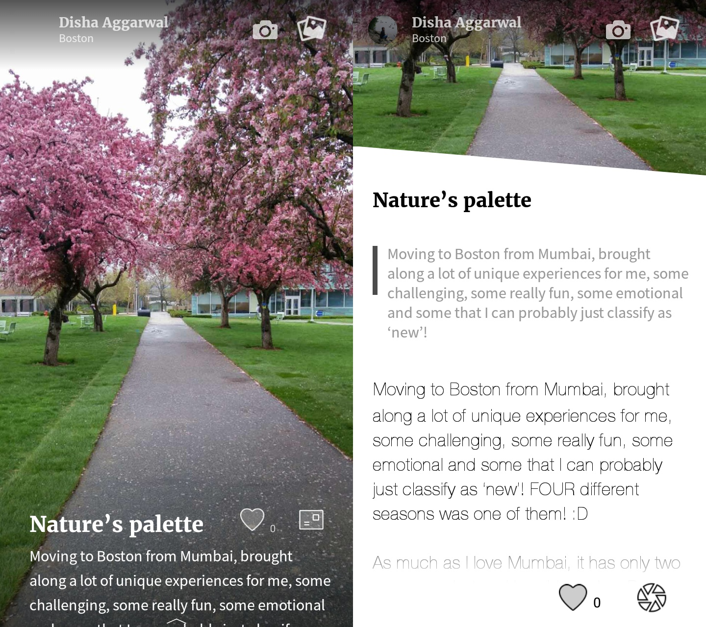

My name is Subramanian and I’m a 28-year-old engineer from India who loves building products. Over the last 6 years, I've built products across technology, card games, fashion and sustainability. Young Sustainable Impact fellow | Young Ocean Leader | Sequoia hack winner
Recent Works

Great fashion should never go to waste, but what if your fashion was made from waste?
Waymore is a sustainable clothing initiative that makes clothing by recycling waste plastic bottles. We wanted to address the lack of an easy, responsible call to action for individuals to opt-in and contribute to fighting plastic pollution. We’ve recycled over 100,000 waste plastic bottles locally in India and our aim is to recycle 1 million waste plastic bottles by 2021.
By producing t-shirts from collected bottles, every shirt tells a story and helps customers to know they're having a strong contribution. Waymore promotes sustainable behaviour in fashion consumption.
Oliver Lange
Head - Retail Innovation Labs, H&M Germany
How can we solve sexual harassment at its roots for a generational systemic change?
Women experience a myriad of emotions when sexually harassed - pain, anger, vulnerability, confusion, helplessness, violation, depression to name a few. These are powerful expressions that the society often overlooks so we are building a medium to give them shape and fight sexual harassment.
The big question was what if we could get men to experience these emotions? We created See For She - a virtual reality experience where men experience sexual harassment in the body of a woman within a virtual space.
A VR experience that captures a universal yet personal journey on the provocative subject of violence against women. I found myself asking questions I hadn’t considered, which balanced discussion of what makes a singular experience so devastatingly uncomfortable for women
Jessica Sagot
Center for research and Interdisciplinary - Paris

Can your t-shirt be your fitbit?
What do you get when you combine computing and fashion? Our clothes are the biggest real estate that is in constant contact with our bodies. With connected fashion, the canvas for ideas and solutions are very broad and limitless, but two frontrunners are definitely entertainment and social good.
I worked with the H&M team in the summer of 2019 to build ideas and prototypes of fashion tech products for a few use cases like love/ relationships, cycling/ commute, disabilities to name a few. H&M has launched one product and the others are in works, more details will be released by the team in a staged manner.

What can YOU do to save polar bears?
Or how would you improve sex education in your school? Or If you could engineer/genetically modify your children, what would you do? Or If all jobs had the same pay and hours, what job would you like to have?
Spark It is a multiplayer card game for social good. We’ve all got big ideas and we’ve all wanted to save the world, haven’t we? Spark It’s here to get you ready for that big day!
I had the opportunity to play Spark It several times. It is an interesting and easy-going game, that makes you think about world issues in a fun and engaging way. The game brings out unique answers and new perspectives everytime. The nature of the game makes it perfect for ice-breaking with new people.

Lenka Vincenova
University of Glasgow

Want more than instagram’s scroll, scroll, double tap, scroll?
Discoveries that leave you in reflection or put a smile on your face. From everyday experiences and emotions to once-in-a-lifetime moments and inspirations. Bridging aesthetics and emotions. You’ve seen these images before - but what does it mean to feel them?
Pixtory (acquired by YourStory) was a mobile storytelling platform with commerce weaved into it in the form of experiences, suggested products and print-to-postcards features.